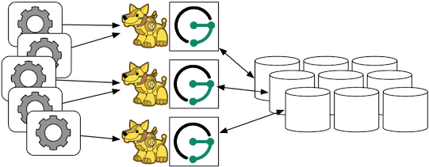

Apache Cassandra
The Apache Cassandra database is the right choice when you need scalability and high availability without compromising performance. Linear scalability and proven fault-tolerance on commodity hardware or cloud infrastructure make it the perfect platform for mission-critical data. Cassandra’s support for replicating across multiple datacenters is best-in-class, providing lower latency for your users and the peace of mind of knowing that you can survive regional outages. The largest known Cassandra cluster has over 75,000 nodes storing over 10 PB of data.
The following sections outline the various ways in which JanusGraph can be used in concert with Apache Cassandra.
Cassandra Storage Backend
Cassandra has two protocols for clients to use: CQL and Thrift. With Cassandra 4.0, Thrift support will be removed in Cassandra. JanusGraph just supports the CQL storage backend.
Note
If security is enabled on Cassandra, the user must have
CREATE permission on <all keyspaces>, otherwise the keyspace must be
created ahead of time by an administrator including the required
tables or the user must have
CREATE permission on <the configured keyspace>. The create table
file containing the required tables is located in
conf/cassandra/cassandraTables.cql. Please define your keyspace
before executing it.
Local Server Mode

Cassandra can be run as a standalone database on the same local host as
JanusGraph and the end-user application. In this model, JanusGraph and
Cassandra communicate with one another via a localhost socket. Running
JanusGraph over Cassandra requires the following setup steps:
- Download Cassandra, unpack
it, and set filesystem paths in
conf/cassandra.yamlandconf/log4j-server.properties - Connecting Gremlin Server to Cassandra using the default configuration files provided in the pre-packaged distribution.
-
Start Cassandra by invoking
bin/cassandra -fon the command line in the directory where Cassandra was unpacked. Read output to check that Cassandra started successfully.Now, you can create a Cassandra JanusGraph as follows
JanusGraph g = JanusGraphFactory.build(). set("storage.backend", "cql"). set("storage.hostname", "127.0.0.1"). open();
In the Gremlin Console, you can not define the type of the variables
conf and g. Therefore, simply leave off the type declaration.
Local Container Mode
Cassandra does not have a native install for Windows or OSX. One of the easiest ways to run Cassandra on OSX, Windows, or Linux is to use a Docker Container. You can download and run Cassandra with a single Docker command. It is important to install a version that is supported by the version of JanusGraph you intend to use. The compatible versions can be found under the Tested Compatibility section of the specific release on the Releases page. The Cassandra Docker Hub page can be referenced for the available versions and useful commands. A description of the ports can be found here. Port 9160 is used for the Thrift client API. Port 9042 is for CQL native clients. Ports 7000, 7001 and 7099 are for inter-node communication. Version 3.11 of Cassandra was the latest compatible version for JanusGraph 0.2.0 and is specified in the reference command below.
docker run --name jg-cassandra -d -e CASSANDRA_START_RPC=true -p 9160:9160 \
-p 9042:9042 -p 7199:7199 -p 7001:7001 -p 7000:7000 cassandra:3.11
Remote Server Mode

When the graph needs to scale beyond the confines of a single machine, then Cassandra and JanusGraph are logically separated into different machines. In this model, the Cassandra cluster maintains the graph representation and any number of JanusGraph instances maintain socket-based read/write access to the Cassandra cluster. The end-user application can directly interact with JanusGraph within the same JVM as JanusGraph.
For example, suppose we have a running Cassandra cluster where one of the machines has the IP address 77.77.77.77, then connecting JanusGraph with the cluster is accomplished as follows (comma separate IP addresses to reference more than one machine):
JanusGraph graph = JanusGraphFactory.build().
set("storage.backend", "cql").
set("storage.hostname", "77.77.77.77").
open();
In the Gremlin Console, you can not define the type of the variables
conf and g. Therefore, simply leave off the type declaration.
Remote Server Mode with Gremlin Server

Gremlin Server can be wrapped around each JanusGraph instance defined in the previous subsection. In this way, the end-user application need not be a Java-based application as it can communicate with Gremlin Server as a client. This type of deployment is great for polyglot architectures where various components written in different languages need to reference and compute on the graph.
Start Gremlin Server using bin/janusgraph-server.sh and then in an
external Gremlin Console session using bin/gremlin.sh you can send
Gremlin commands over the wire:
:plugin use tinkerpop.server
:remote connect tinkerpop.server conf/remote.yaml
:> g.addV()
In this case, each Gremlin Server would be configured to connect to the Cassandra cluster. The following shows the graph specific fragment of the Gremlin Server configuration. Refer to JanusGraph Server for a complete example and more information on how to configure the server.
...
graphs: {
g: conf/janusgraph-cql.properties
}
scriptEngines: {
gremlin-groovy: {
plugins: { org.janusgraph.graphdb.tinkerpop.plugin.JanusGraphGremlinPlugin: {},
org.apache.tinkerpop.gremlin.server.jsr223.GremlinServerGremlinPlugin: {},
org.apache.tinkerpop.gremlin.tinkergraph.jsr223.TinkerGraphGremlinPlugin: {},
org.apache.tinkerpop.gremlin.jsr223.ImportGremlinPlugin: {classImports: [java.lang.Math], methodImports: [java.lang.Math#*]},
org.apache.tinkerpop.gremlin.jsr223.ScriptFileGremlinPlugin: {files: [scripts/empty-sample.groovy]}}}}
...
For more information about Gremlin Server see the Apache TinkerPop documentation
CQL Specific Configuration
Refer to Configuration Reference for a complete listing of all Cassandra specific configuration options in addition to the general JanusGraph configuration options.
When configuring CQL it is recommended to consider the following CQL specific configuration options:
- read-consistency-level: Cassandra consistency level for read operations
- write-consistency-level: Cassandra consistency level for write operations
- replication-factor: The replication factor to use. The higher the replication factor, the more robust the graph database is to machine failure at the expense of data duplication. The default value should be overwritten for production system to ensure robustness. A value of 3 is recommended. This replication factor can only be set when the keyspace is initially created. On an existing keyspace, this value is ignored.
- keyspace: The name of the keyspace to store the JanusGraph graph in. Allows multiple JanusGraph graphs to co-exist in the same Cassandra cluster.
More information on Cassandra consistency levels and acceptable values can be found here. In general, higher levels are more consistent and robust but have higher latency.
Global Graph Operations
JanusGraph over Cassandra supports global vertex and edge iteration.
However, note that all these vertices and/or edges will be loaded into
memory which can cause OutOfMemoryException. Use JanusGraph with TinkerPop’s Hadoop-Gremlin to
iterate over all vertices or edges in large graphs effectively.
Deploying on Amazon EC2
Amazon Elastic Compute Cloud (Amazon EC2) is a web service that provides resizable compute capacity in the cloud. It is designed to make web-scale computing easier for developers.
Follow these steps to setup a Cassandra cluster on EC2 and deploy JanusGraph over Cassandra. To follow these instructions, you need an Amazon AWS account with established authentication credentials and some basic knowledge of AWS and EC2.
Setup Cassandra Cluster
These instructions for configuring and launching the DataStax Cassandra Community Edition AMI are based on the DataStax AMI Docs and focus on aspects relevant for a JanusGraph deployment.
Setting up Security Group
- Navigate to the EC2 Console Dashboard, then click on "Security Groups" under "Network & Security".
- Create a new security group. Click Inbound. Set the "Create a new rule" dropdown menu to "Custom TCP rule". Add a rule for port 22 from source 0.0.0.0/0. Add a rule for ports 1024-65535 from the security group members. If you don’t want to open all unprivileged ports among security group members, then at least open 7000, 7199, and 9160 among security group members. Tip: the "Source" dropdown will autocomplete security group identifiers once "sg" is typed in the box, so you needn’t have the exact value ready beforehand.
Launch DataStax Cassandra AMI
- "Launch the DataStax AMI in your desired zone
- On the Instance Details page of the Request Instances Wizard, set "Number of Instances" to your desired number of Cassandra nodes. Set "Instance Type" to at least m1.large. We recommend m1.large.
-
On the Advanced Instance Options page of the Request Instances Wizard, set the "as text" radio button under "User Data", then fill this into the text box:
[number-of-instances] in this configuration must match the number of EC2 instances configured on the previous wizard page. [cassandra-cluster-name] can be any string used for identification. For example:--clustername [cassandra-cluster-name] --totalnodes [number-of-instances] --version community --opscenter no--clustername janusgraph --totalnodes 4 --version community --opscenter no -
On the Tags page of the Request Instances Wizard you can apply any desired configurations. These tags exist only at the EC2 administrative level and have no effect on the Cassandra daemons' configuration or operation.
- On the Create Key Pair page of the Request Instances Wizard, either select an existing key pair or create a new one. The PEM file containing the private half of the selected key pair will be required to connect to these instances.
- On the Configure Firewall page of the Request Instances Wizard, select the security group created earlier.
- Review and launch instances on the final wizard page.
Verify Successful Instance Launch
- SSH into any Cassandra instance node:
ssh -i [your-private-key].pem ubuntu@[public-dns-name-of-any-cassandra-instance] - Run the Cassandra nodetool
nodetool -h 127.0.0.1 ringto inspect the state of the Cassandra token ring. You should see as many nodes in this command’s output as instances launched in the previous steps.
Note, that the AMI takes a few minutes to configure each instance. A shell prompt will appear upon successful configuration when you SSH into the instance.
Launch JanusGraph Instances
Launch additional EC2 instances to run JanusGraph which are either configured in Remote Server Mode or Remote Server Mode with Gremlin-Server as described above. You only need to note the IP address of one of the Cassandra cluster instances and configure it as the host name. The particular EC2 instance to run and the particular configuration depends on your use case.
Example JanusGraph Instance on Amazon Linux AMI
- Launch the Amazon Linux AMI in the same zone of the Cassandra cluster. Choose your desired EC2 instance type depending on the amount of resources you need. Use the default configuration options and select the same Key Pair and Security Group as for the Cassandra cluster configured in the previous step.
- SSH into the newly created instance via
ssh -i [your-private-key].pem ec2-user@[public-dns-name-of-the-instance]. You may have to wait a little for the instance to launch. - Download the
current JanusGraph distribution with
wgetand unpack the archive locally to the home directory. Start the Gremlin Console to verify that JanusGraph runs successfully. For more information on how to unpack JanusGraph and start the Gremlin Console, please refer to the Getting Started guide - Create a configuration file with
vi janusgraph.propertiesand add the following lines::storage.backend = cql storage.hostname = [IP-address-of-one-Cassandra-EC2-instance]
You may add additional configuration options found on this page or in Configuration Reference.
- Start the Gremlin Console again and type the following::
gremlin> graph = JanusGraphFactory.open('janusgraph.properties') ==>janusgraph[cql:[IP-address-of-one-Cassandra-EC2-instance]]
Note
You have successfully connected this JanusGraph instance to the Cassandra cluster and can start to operate on the graph.
Connect to Cassandra cluster in EC2 from outside EC2
Opening the usual Cassandra ports (9042, 7000, 7199) in the security group is not enough, because the Cassandra nodes by default broadcast their ec2-internal IPs, and not their public-facing IPs.
The resulting behavior is that you can open a JanusGraph graph on the cluster by connecting to port 9042 on any Cassandra node, but all requests to that graph time out. This is because Cassandra is telling the client to connect to an unreachable IP.
To fix this, set the "broadcast-address" property for each instance in /etc/cassandra/cassandra.yaml to its public-facing IP, and restart the instance. Do this for all nodes in the cluster. Once the cluster comes back, nodetool reports the correct public-facing IPs to which connections from the local machine are allowed.
Changing the "broadcast-address" property allows you to connect to the cluster from outside ec2, but it might also mean that traffic originating within ec2 will have to round-trip to the internet and back before it gets to the cluster. So, this approach is only useful for development and testing.